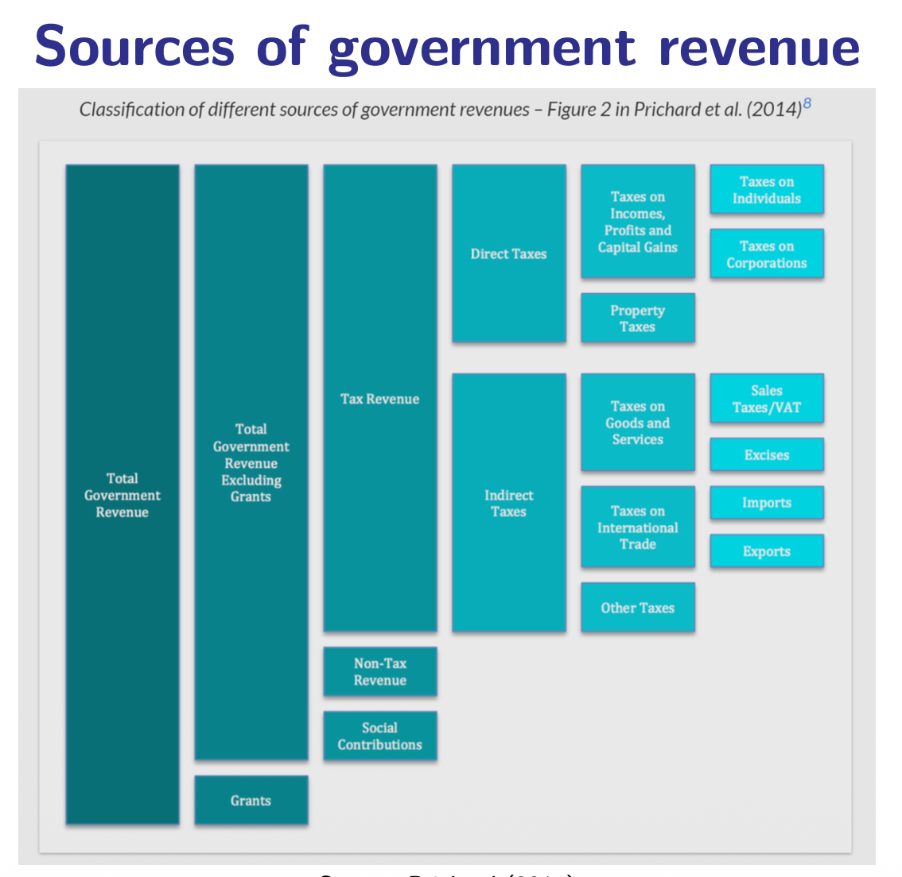

9.1 — Why Tax? The Five Rs & Tax Taxonomy
Chapter 9: Taxation & Tax Incidence — The Foundations
Why Do Governments Tax?
To understand taxation, we first go back to the famous framework of Richard Musgrave (1939), who identified the three branches of government:
📊 Stabilization
The government smooths out economic booms and recessions. During a crisis, it spends more (stimulus). During a boom, it pulls back. This branch needs money to function — you cannot spend during a recession without having collected revenue before.
🏗️ Allocation
The government provides public goods and corrects market failures (externalities, monopolies, information asymmetries). Building roads, funding police, running schools — all of this requires tax revenue to pay for.
⚖️ Distribution
The government redistributes income and wealth from the rich to the poor to reduce inequality. Taxation is the main tool of this branch — progressive taxes take more from the wealthy and fund transfers (pensions, welfare, healthcare) for those who need them.
The Five "Rs" of Taxation
Modern public finance has expanded Musgrave's framework into five fundamental purposes of taxation. These are sometimes called the "Five Rs":
-
Revenue
The most obvious purpose: to fund public services, infrastructure, and administration. Without revenue, the government simply cannot exist. This is the baseline function — taxes pay for everything from the military to teachers' salaries to hospital equipment.
-
Redistribution
Taxes are designed to reduce inequalities between individuals and between groups. A progressive income tax takes relatively more from the rich than from the poor. The collected revenue is then used for transfers (pensions, welfare, child benefits) that disproportionately help lower-income citizens. The net effect is a narrowing of the gap between rich and poor.
-
Repricing
Taxes can be used to change the market price of harmful goods — making "public bads" more expensive so that people consume less of them. This is the famous Pigouvian tax logic from Chapter 4. Examples include excise taxes on tobacco (to reduce smoking and lung cancer), carbon taxes (to reduce CO₂ emissions and fight climate change), and sugar taxes (to reduce obesity). The tax "re-prices" the product to include its social cost.
-
Representation
This is a less obvious but very powerful idea: when a government relies heavily on tax revenue (rather than on natural resources or aid), it tends to have better governance and stronger democratic institutions. Why? Because citizens who pay significant taxes demand accountability from their government. They want to know where their money goes and will punish corrupt or wasteful politicians. Countries that rely on oil revenues or foreign aid often have weak democratic processes because the government does not need to answer to taxpayers.
-
Reparation
The most recent and most controversial "R": using tax policy as a tool for addressing historical injustices. This argument says that colonialism, slavery, and systemic exploitation created enormous wealth gaps between countries and between groups within countries. Tax policy (such as wealth taxes, land taxes, or reparation funds) could be used as a tool to partially correct these historical wrongs and redistribute wealth back to the descendants of exploited populations.
For the exam: Know all Five Rs by heart and be able to give a concrete example for each. The first two (Revenue, Redistribution) are classic Musgrave. The third (Repricing) is Pigouvian. The last two (Representation, Reparation) are modern additions from development economics and political philosophy.
Government Revenue: The Full Structure
Where does the government's money actually come from? The following diagram shows the complete structure of government revenue, breaking it down from the total all the way to individual tax types:

Total Government Revenue first splits into Grants (money received from other governments or international organizations, like EU funds) and Revenue Excluding Grants (money earned domestically).
Revenue Excluding Grants has three components:
- Tax Revenue — the largest component in virtually all developed countries. This is further split into Direct Taxes (income tax, profits tax, property tax — levied directly on a person or company) and Indirect Taxes (VAT, excise duties, trade taxes — levied on transactions and goods).
- Non-Tax Revenue — fees, fines, profits from state-owned enterprises, dividends from public investments, licensing revenues.
- Social Contributions — mandatory payments specifically earmarked for social insurance (pensions, health insurance, unemployment insurance). These are technically separate from "taxes" but function very similarly.
The Two Fundamental Questions of Tax Design
All of tax policy ultimately reduces to two guiding questions:
⚡ HOW Do We Tax?
This is about efficiency and flexibility. The ideal tax system should raise revenue with the minimum possible distortion to the economy. It should be easy to administer, difficult to evade, and flexible enough to adapt to changing economic conditions.
👤 WHO Do We Tax?
This is about equity and transparency. The ideal tax system should distribute the burden fairly — but what "fairly" means is the subject of enormous political debate. Should the rich pay proportionally more? How much more?
The Tax Taxonomy: Key Definitions
Before diving into specific taxes, you need a rock-solid understanding of the basic vocabulary of taxation:
- Tax = the absolute amount paid in money terms (e.g. "I paid €5,000 in tax").
- Tax Base = the thing being taxed (income, wealth, consumption, a specific activity).
- Tax Rate = the percentage applied to the tax base.
- Formula: $\text{Tax} = \text{Tax Base} \times \text{Tax Rate}$
Average Tax Rate (ATR)
$ATR = \dfrac{\text{Total Tax Paid}}{\text{Total Income}}$
The overall percentage of your total income that goes to taxes. This is the number you care about when you look at your paycheck and ask "what percentage of my salary did the government take?"
Marginal Tax Rate (MTR)
$MTR = \dfrac{\Delta \text{Tax}}{\Delta \text{Income}}$
The percentage that applies to the last euro you earned. If you earn €1 more, how much of it does the government take? This is the rate that matters for behavioral decisions — it determines whether you want to work one more hour.
Regressive, Proportional, or Progressive? These terms describe how the Average Tax Rate changes as income rises:
- Progressive: ATR increases as income rises. Rich people pay a higher percentage. (Most income taxes)
- Proportional (Flat): ATR stays constant regardless of income. Everyone pays the same percentage. (Some Eastern European countries)
- Regressive: ATR decreases as income rises. Poor people pay a higher percentage of their income. (Sales taxes, VAT — because poor people spend a larger share of their income on consumption)
The Complete Taxonomy of Taxes
| Category | Sub-Type | Examples | Direct / Indirect |
|---|---|---|---|
| 1. Taxes on Income | Taxes on earnings | Payroll tax (employer/employee social contributions) | Direct |
| Taxes on individual income (non-earnings) | Capital gains tax (on profits from selling assets) | Direct | |
| Taxes on corporate income | Corporate income tax, excess profits tax, resource tax | Direct | |
| 2. Taxes on Wealth | Stock of assets | Wealth tax, real estate tax, estate/inheritance tax | Direct |
| 3. Taxes on Consumption | Spending on goods & services | Excise tax, carbon tax, VAT (value-added tax) | Indirect |
| 4. Taxes on Activity | Business transactions | Sales tax, digital services tax, trade/customs tax | Indirect |
Chapter 9.1 — The Big Picture:
- Musgrave (1939): Three branches of government — Stabilization, Allocation, Distribution. The first two need revenue; the third uses taxation directly.
- Five Rs: Revenue, Redistribution, Repricing, Representation, Reparation.
- Revenue structure: Total Revenue → Grants + Revenue Excl. Grants → Tax Revenue (Direct + Indirect) + Non-Tax Revenue + Social Contributions.
- Two guiding questions: HOW to tax (efficiency/flexibility) vs. WHO to tax (equity/transparency). Always an equity–efficiency trade-off.
- $\text{Tax} = \text{Base} \times \text{Rate}$. Know ATR vs. MTR. Know Progressive vs. Proportional vs. Regressive.
- Four types of tax: Income, Wealth, Consumption, Activity. Direct (income, wealth) vs. Indirect (consumption, activity).